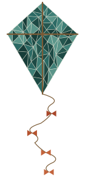
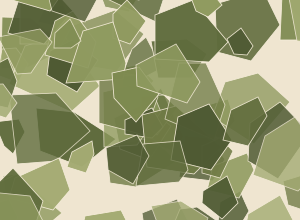
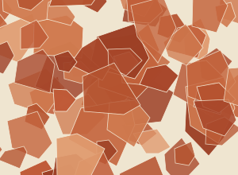
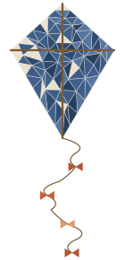
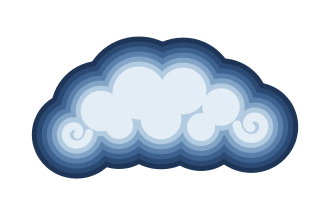
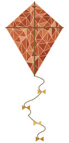
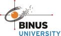

Tenang
Nama kami adalah janji kami. Orang yang tenang bisa berpikir jernih, memahami perasaannya, dan memilih langkah berikutnya.
N2CIAS · dukungan kesehatan mental untuk institusi
Nesya adalah teman cerita berbasis AI yang bisa diajak bicara 24 jam dalam Bahasa Indonesia. Institusi Anda menyediakannya untuk karyawan, mahasiswa, atau tenaga kesehatan, dan hanya melihat pola anonim, bukan isi percakapan.
Untuk institusi


Universitas Dukungan di luar jam konseling Mahasiswa bisa mulai bercerita kapan saja. Tim kemahasiswaan melihat kapan kebutuhan naik. Selengkapnya
 Rumah sakit
Untuk yang merawat orang lain
Perawat dan dokter bisa bercerita sesudah shift malam, tanpa menunggu jam layanan buka.
Selengkapnya
Rumah sakit
Untuk yang merawat orang lain
Perawat dan dokter bisa bercerita sesudah shift malam, tanpa menunggu jam layanan buka.
Selengkapnya


Perusahaan Tunjangan yang benar-benar dipakai Karyawan punya tempat untuk mulai. HR melihat tren tanpa tahu siapa bercerita apa. Selengkapnya Kesehatan masyarakat Menjangkau lebih banyak orang Dari Puskesmas sampai Dinas Kesehatan: langkah pertama yang mudah dan data untuk perencanaan. SelengkapnyaPlatform
Satu layanan untuk dua kebutuhan: orang-orang Anda mendapat Nesya, teman cerita berbasis AI yang tersedia 24/7, dan institusi mendapat dashboard agregat untuk memahami kebutuhan kesehatan mental tanpa mengintip percakapan siapa pun.
Filosofi & cerita
Dukungan kesehatan mental yang baik tidak dimulai saat krisis. Ia dimulai dari tempat yang aman untuk bercerita.
Nama kami adalah janji kami. Orang yang tenang bisa berpikir jernih, memahami perasaannya, dan memilih langkah berikutnya.

Dalam batik Cirebon, awan mega mendung melambangkan kesabaran dan kepala yang dingin dalam cuaca apa pun. Awan itu juga membawa hujan yang menumbuhkan. Begitulah kami ingin Nesya hadir.
Layang-layang terbang tinggi justru karena ada benang yang memegangnya. Dukungan yang baik memberi ruang untuk bebas, sekaligus pegangan saat angin kencang.
Dari riset ke penerapan
Kami mulai dari bukti: penelitian tentang pendamping AI dan kesehatan mental, termasuk batas-batasnya.
Lihat rujukanAlur percakapan, jalur rujukan, dan batas keamanan disusun bersama psikolog klinis.
Setiap institusi mulai dengan pilot 8–12 minggu, dengan target dan evaluasi yang disepakati bersama.
Data agregat dan evaluasi program menjadi pelajaran baru, yang membawa kami kembali ke riset.
Fitur
Bukan sekadar chatbot. Alat yang membantu orang merasa lebih baik dan tahu langkah berikutnya.
Ngobrol kapan saja dalam Bahasa Indonesia sehari-hari, dengan empati dan tanpa menghakimi.
Beberapa pertanyaan untuk mengenali perasaan dan apa yang sedang dibutuhkan.
Latihan napas, grounding, dan refleksi singkat yang bisa dilakukan di mana saja.
Saat butuh lebih dari sekadar cerita, Nesya mengarahkan ke psikolog atau konselor.
Atas izin pengguna, psikolog menerima ringkasan agar sesi tidak mulai dari nol.
Pola agregat yang anonim untuk merencanakan program dukungan.
Jalur dukungan
Cara kerja
Dashboard institusi
Pola pemakaian dan kesehatan mental yang anonim dan agregat, untuk perencanaan program, pencegahan, dan alokasi dukungan.
Langkah yang dipilih pengguna setelah setiap check-in.
Puncak di pertengahan bulan, bertepatan dengan masa ujian atau tenggat kerja.
Institusi tidak pernah melihat percakapan pribadi. Angka hanya muncul jika kelompoknya cukup besar sehingga tidak ada orang yang bisa dikenali.
Perencana kapasitas
Semua orang dalam program mendapat akses. Kapasitas menentukan berapa banyak sesi dukungan bersama yang tersedia setiap bulan.
Ini perkiraan awal. Biaya akhir tergantung jumlah peserta, kapasitas, kebutuhan laporan, dan cakupan implementasi.

Keamanan & privasi
Riset
Penelitian tentang pendamping AI untuk kesehatan mental yang kami pelajari dalam membangun Nesya.
Kenapa N2CIAS
Dari Indonesia, untuk Indonesia
Ketersediaan
Mulai dengan yang sudah tersedia, atau lewat pilot terstruktur sebelum implementasi yang lebih luas.
Pilot biasanya berjalan 8–12 minggu untuk satu populasi, dengan onboarding, target keberhasilan, dan evaluasi bersama.
Bekerja bersama institusi di Indonesia




FAQ
Tidak. Institusi hanya melihat angka agregat, dan hanya untuk kelompok yang cukup besar sehingga tidak ada individu yang bisa dikenali.
Bukan. Nesya adalah AI yang membantu orang bercerita, menenangkan diri, dan menemukan langkah berikutnya. Untuk penanganan lebih dalam, Nesya merujuk ke psikolog atau konselor.
Nesya mengarahkan pengguna ke layanan darurat dan jalur rujukan yang disepakati dengan institusi. N2CIAS bukan layanan krisis.
Tidak. Nesya bisa diakses lewat browser di ponsel maupun laptop.
Per peserta per bulan, sesuai tingkat kapasitas yang dipilih. Gunakan perencana kapasitas di atas, lalu kami sesuaikan saat diskusi.
Bisa. Banyak institusi memulai dengan pilot untuk satu fakultas, unit, atau departemen.
Hubungi kami
Kami akan membahas implementasi N2CIAS yang paling cocok untuk universitas, rumah sakit, perusahaan, atau program kesehatan masyarakat Anda.
Atau kirim email ke hai@tenangaja.co.id